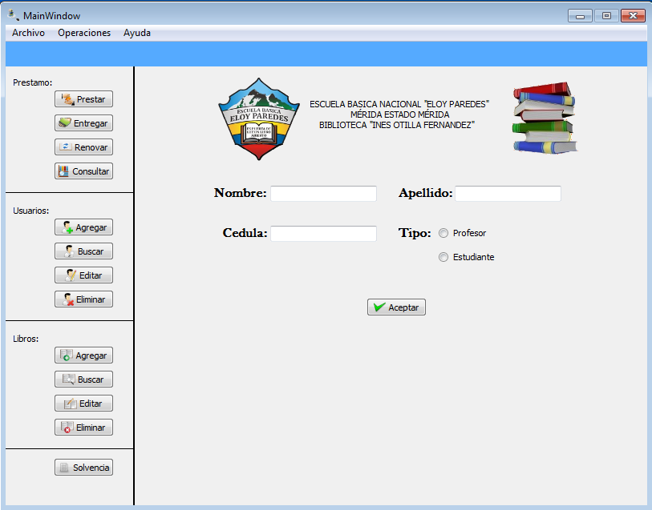

Para realizar la operación de agregar un nuevo usuario existen dos forma de realizar dicha operación:
Figura: Menu Operaciones -> Usuario
Una vez seleccionada la opción de Agregar, debe llenar el formulario que se le muestra en la siguiente figura. Terminado de completar el formulario le damos al boton aceptar y el usuario será registrado satifactoriamente al sistema.
